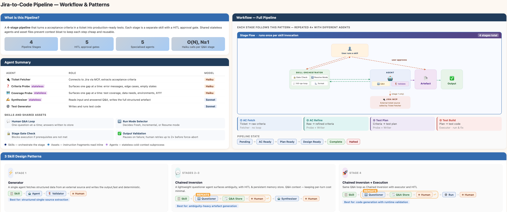

From Jira Ticket to Test Code —
Building an Agentic Pipeline in Two Weeks
AI has changed how we build, test and ship software — and if you work in quality engineering, you've felt it. This is the story of two weeks, four certificates and one system that ties it all together.
The Shift I Couldn't Ignore
Over the past year I've been layering AI into my testing workflow piece by piece: Playwright MCP for browser automation, GitHub Copilot for test scaffolding and agentic flows to orchestrate the repetitive parts of a test cycle. Each addition saved time. But I wanted to understand the concepts underneath them — so I went deep.
Two Weeks, Four Certificates, One System
I carved out two weeks to properly learn the foundational concepts shaping modern AI engineering: agents, agentic workflows, RAG, MCP (Model Context Protocol) and Skills. I worked through Claude's Skilljar courses and a stack of YouTube deep-dives, completing four certificates along the way.
The concepts clicked. I built small experiments — MCP servers, standalone agent bots, multi-agent subagent chains. But the real test was putting them together into something that actually does something useful.
The Project: Jira to Test Code, End to End
I designed a sequential agentic pipeline that takes a Jira ticket ID as input and outputs production-ready test files — no manual handoffs, no copy-pasting, no context switching. The pipeline has four stages, each owned by a dedicated stateless agent.
| Stage | What it does | Output |
|---|---|---|
| AC Extraction | Connects to Jira via MCP, pulls acceptance criteria | requirements-{id}.md |
| AC Refinement | Probes for gaps — edge cases, error states, empty states | refined-requirements-{id}.md |
| Test Planning | Designs a test plan (unit ~70%, integration ~20%, E2E ~10%) | test-plan-{id}.md |
| Test Implementation | Writes and runs Playwright + Jest test files | test-cases-{id}.md |
Between every stage sits a Human-in-the-Loop gate — the pipeline pauses, surfaces the artefact, and waits for your explicit approval before advancing. You can edit the output before signing off. Nothing moves without you.
Well-scoped agents with clear handoffs outperform one monolithic model trying to do everything at once.
The Core AI Concepts at Work
This wasn't just gluing tools together. Every design decision maps to a specific agentic concept.

What This System Achieves
You trigger each stage individually and approve every handoff. But what the pipeline actually solves is a problem every QA engineer knows well: the gap between what a ticket says and what actually needs to be tested.
Most acceptance criteria stop at the happy path. Empty states, error messages, boundary conditions, accessibility — they're rarely written down, and by the time a tester picks up the ticket, those gaps are invisible until something breaks in production. This pipeline makes them visible early. The AI probes the spec one question at a time, you answer, and the result is a refined, test-ready specification before a single line of test code is written."
That refined spec then drives a structured test plan — coverage intentionally spread across unit, integration, and end-to-end layers — and from there, the test generator scaffolds real Playwright and Jest files and runs them. You're not starting from a blank file; you're reviewing working code that came from a clear spec that came from a clarified ticket.
The pipeline is reproducible, resumable and cheap — proof that well-scoped agents with clear handoffs outperform one monolithic model trying to do everything at once.
What's Next
This was a demo, but the patterns are real and the problem space is large. Vague acceptance criteria, missing edge cases, slow test cycles and late-stage defects are problems every QA team deals with daily. Agentic pipelines like this one are a practical way to push that quality work earlier in the process — at the spec stage, not the bug-report stage.
I want to take these further. A few areas I'm interested in exploring next: using agents to detect when existing tests drift from the acceptance criteria they were written against, flagging untested code paths from production logs and building smarter triage tools that categorise failing tests automatically after a deployment.
The broader goal is the same throughout — use AI to do the structured, repeatable work, keep the engineer in control of the judgement calls and ship with more confidence.